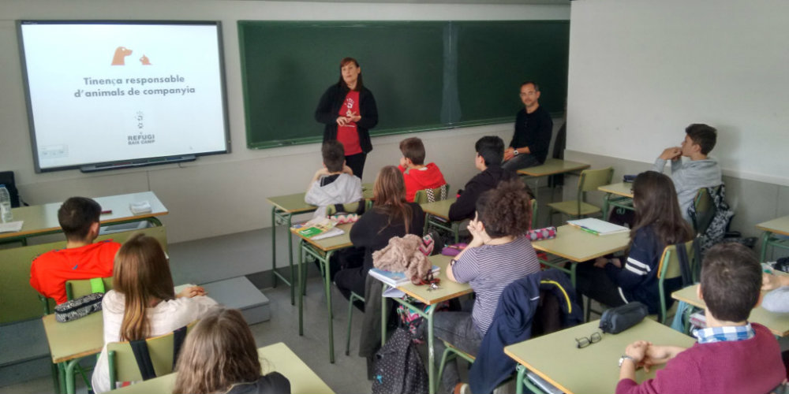
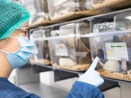
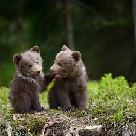

QUE FEM
En l´organització Pirinos estem compromesos amb la conservació dels ossos del Pirineu i portem a terme diverses activitats per garantir la seva protecció i supervivència:
- - Seguiment i monitoratge: Utilitzem tecnologies avançades per rastrejar els moviments dels ossos i estudiar els seus hàbits alimentaris i reproductius.
- - Investigació científica: Portem a terme estudis sobre la biologia, la genètica i el comportament dels ossos per comprendre millor les seves necessitats i amenaces.
- - Educació i sensibilització: Organitzem campanyes de conscienciació per educar el públic sobre la importància de la conservació dels ossos i com poden contribuir a la seva protecció.
- - Col·laboració amb altres entitats: Treballem conjuntament amb governs, comunitats locals i altres organitzacions de conservació per desenvolupar i implementar estratègies efectives de protecció.
- - Restauració d'hàbitats: Participem activament en la restauració d'hàbitats clau per als ossos del Pirineu, contribuint a la seva supervivència a llarg termini.
- - Monitoratge comunitari: Involucrem les comunitats locals en activitats de monitoratge i conservació per fomentar la seva implicació directa en la protecció dels ossos.


